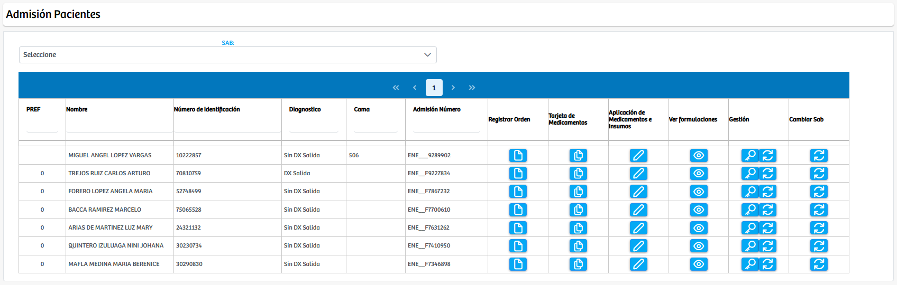
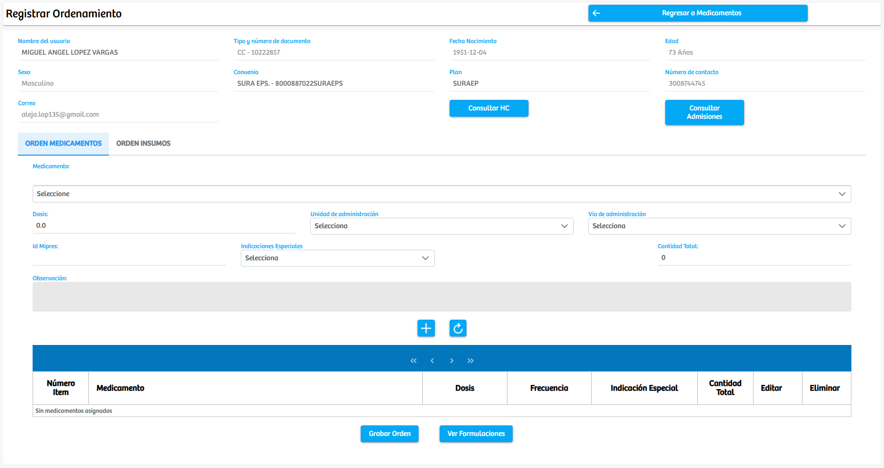
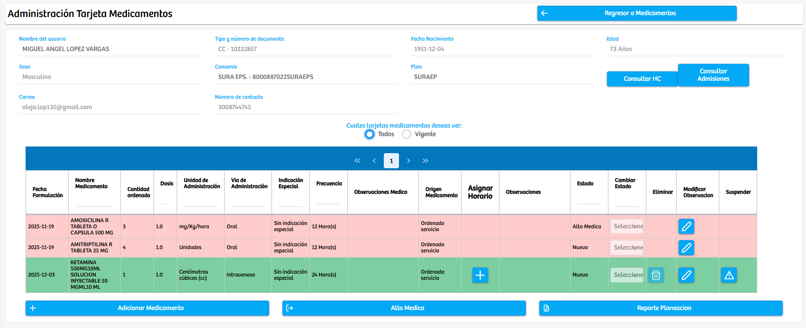
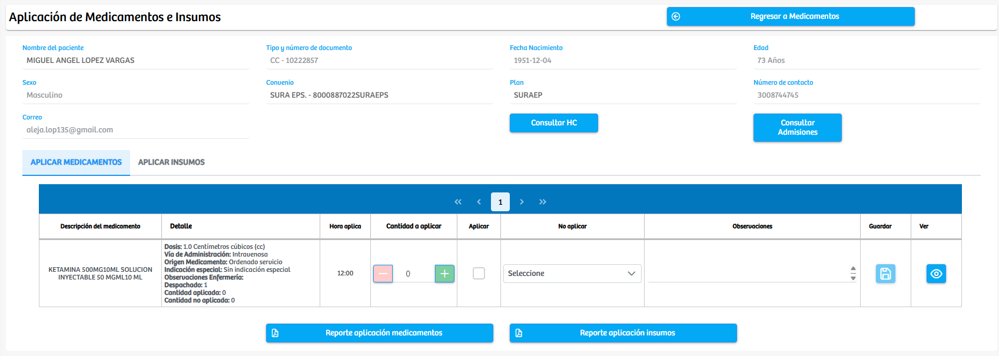
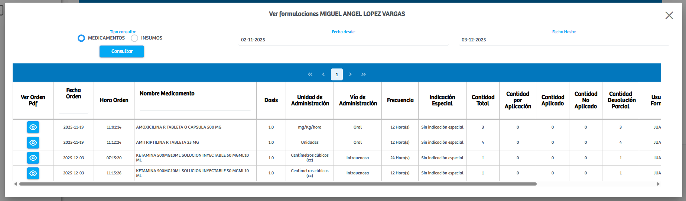

Modulos Sas-Web
Funcionalidades
Medicamentos
Este es un modulo en el cual podemos consultar a cada paciente(registro) de manera individual para poder gestionar sus ordenes de medicamentos. En esta vista podemos generar nuevas ordenes, ver los medicamentos que estan vigentes, generar la aplicacion de medicamentos, ver las formulaciones que hay hasta la fecha, nos permite gestionar los medicamentos que estan formulados y aparte nos deja cambiar el SAB del paciente.
Al presionar el boton "Registar Orden" este nos lleva a una nueva vista donde tendremos los datos del paciente que seleccionamos y justo debajo de ello tenemos un formulario el cual nos permite agregarle un nuevo medicamento a la orden que estemos creando. Nos piden informacion como: Meciamento, Dosis, unidad de administracion, via de administracion, indicaciones especiales y cantidad total del medicamento... Despues de poner esta informacion y presionar el boton "Agregar" se agregara a la tabla de abajo dicho registro. Si en algun momento nos equivocamos tambien tenemos la opcion de "Reformular" para corregir los errores de la orden.
Regresando a la interfaz principal vemos el segundo de los botones de cada registro, este es "Tarjeta de Medicamentos" y al presionarlo nos envia a otra vista donde: podremos ver la informacion basica del paciente, y justo debajo de esto tenemos las tarjetas de medicamentos que tiene el paciente. Aqui podremos elegir si ver las tarjetas que estan vigentes o las que no.
Encontramos otra funcionalidad en el boton de la interfaz principal "Aplicacion de Medicamentos e Insumos" la cual nos permite gestionar las aplicaciones de medicamentos. Estos ultimos tienen un horario de aplicacion, es por ello que los medicamentos solo se pueden visulizar aqui 2 horas antes y 1 despues de la hora de aplicacion marcada en el sistema. Y una vez aqui podemos determinar: la cantidad a aplicar, si se aplica o no se aplica y las observaciones del medicamento... Despues de este proceso nos permite guardar la informacion que acabamos de diligenciar para llevar un registro de los medicamentos que se aplican.
Recordamos tener en la interfaz principal un boton llamado: "Ver Formulaciones", este nos va abrir un modal en el cual(como su nombre lo indica) podremos consultar la formulacion de medicamentos que se le han realizado a el paciente que se este tratando. Aqui mismo podremos filtrar las formulaciones por su fecha.
Exiten otros botones con diferentes funcionalidades, si hablamos de "Gestion de Medicamentos e Insumos" este es uno el cual nos permite gestionar la aplicacion de medicamentos e insumos en el caso especifico de cada paciente. Luego de este tenemos un boton llamado "Cambiar Estado de Medicamentos Planeados" que nos sirve para manejar el estado de los medicamentos. Aparte a este existe el boton de "Cambiar SAB" pero no es muy usado.